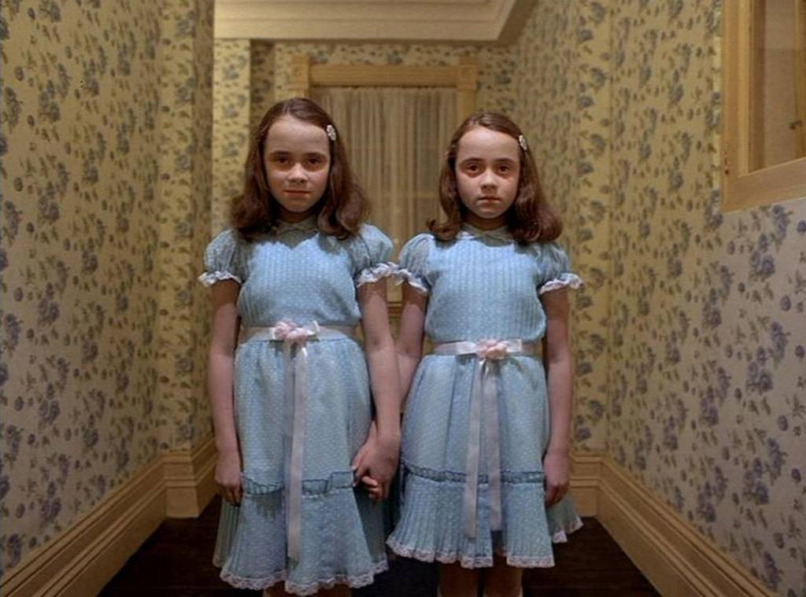
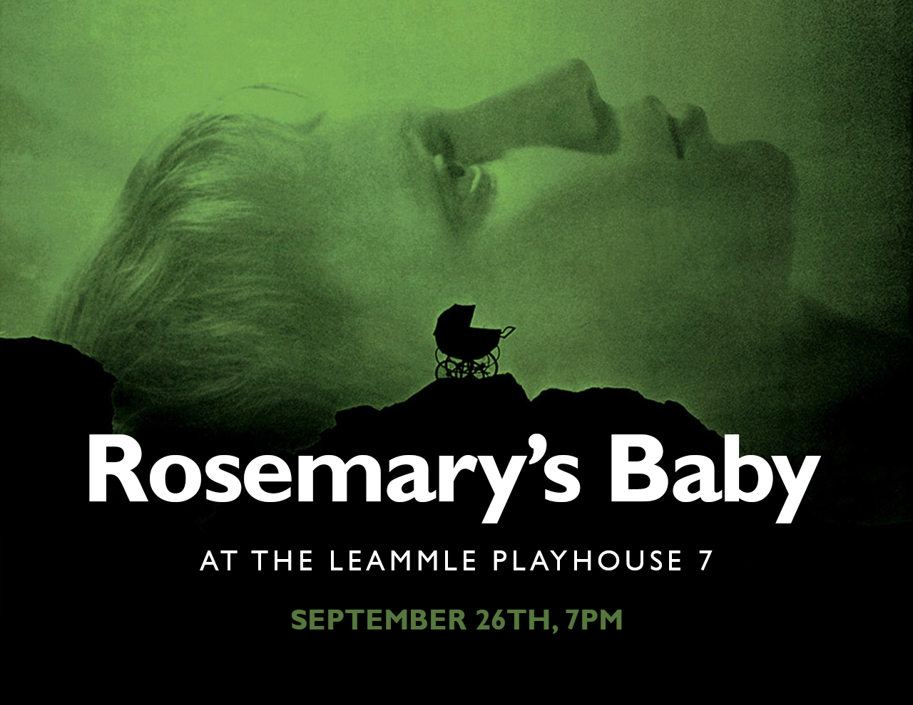
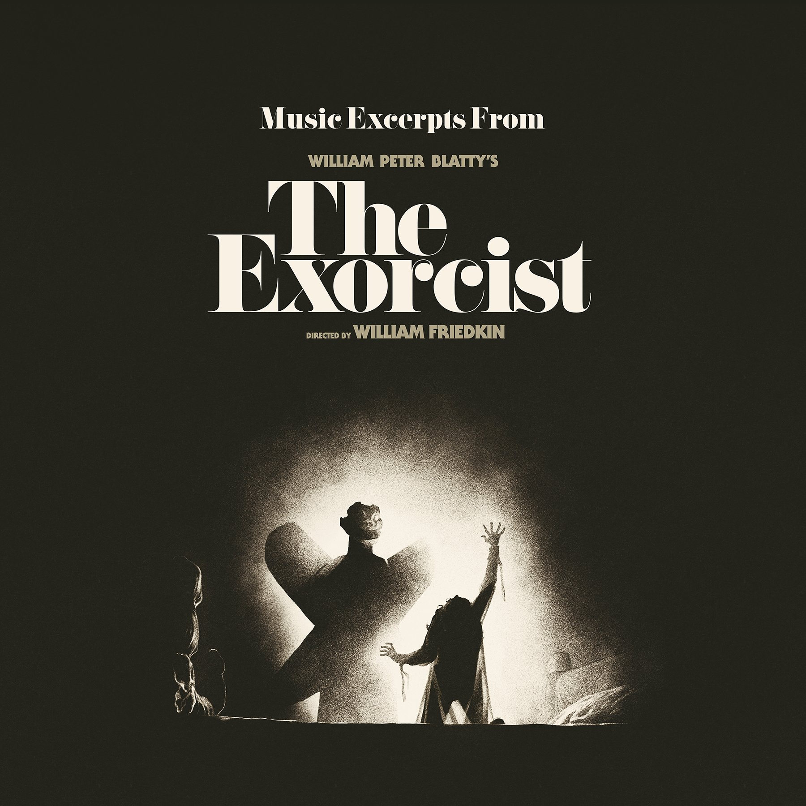

What makes a scary movie scary?
If you glanced at what's come out in the past 20 years, you might think it's the amount of diced body tissue flying around the screen. Horror has always depended on shock value, but what really unsettles us hasn't changed much: an ominous sound from around the corner, an indecipherable figure in the distance, a sense of impending doom as somebody opens a door.
Now I'll list 3 of my favorite American Horror Movies..
#1 The Shining （1980）
Stephen King may not be a huge fan of Stanley Kubrick's adaptation of The Shining, but movie fans sure do seem to be. This tale of a family stuck in a snowbound hotel all alone features some of the most terrifying sequences ever, but it's probably Jack Nicholson's gloriously unhinged performance that movie buffs remember the most. Well, Nicholson and those freaky twin girls. And that hedge maze. And that bleeding elevator. And that woman in the shower. 
#2 Rosemary's Baby (1968)
This one bored me to tears when I saw it as a kid, and there's a good reason for that: Rosemary's Baby is made for grown-ups. Not only is Roman Polanski's movie another one of those "drama!" horror films that makes you wait patiently for the scary stuff, but it also deals with decidedly adult themes like fear of commitment, fear of impending parenthood, and, of course, fear of freaky-ass neighbors who may or may not be members of an evil satanic cult.
#3 The Exorcist (1973)
The original, unquestionable, undisputed great grandpappy of "possession" horror, and one hell of a brutally good time, William Friedkin's The Exorcist is not just one of the scariest films ever made: it's also one of the most well-constructed horror movies of all time. The story of demon-inhabited Regan, her distraught mother, and the two priests working their religious mojo to save her life holds up to repeat viewings -- partially because the horrific set pieces still hold up resoundingly well, and also because the actors create realistic, believable characters who are worthy of our empathy.